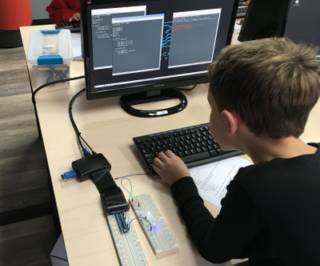
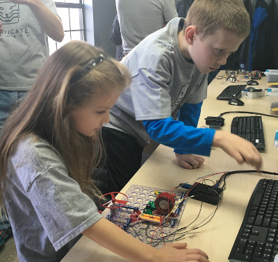
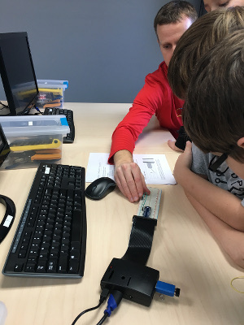

230 Village Center Drive
Logan NJ
484-483-5820
Predicate Academy is an immersive instructional experience teaching youth the language of creativity. We provide a gentle introduction to the field of Computer Science by coding projects that impact the physical world.  Our programs are designed to build stuff, solve hard problems, appreciate the diverse perspectives of teamwork, and have a great deal of fun along the way. Our classes meet weekly and run for 10 weeks. Students purchase and keep all hardware used during the class. Our goal is to provide lifelong skills that stimulate the mind to think about approaching advanced technology with an eye for innovation.
What's in a name? - check out this post for details.
Why Technology Education?Technology is pervasive in our society. It impacts almost every field of study and every career path. We often see technology through the lens of a consumer - we carry it in our pocket, use it at work, have it control our homes, and entertain children.  Being a producer of technology, the ability to think computationally, unlocks our creative side; it provides a venue to learn how to decompose a problem into a set of tasks, sequence and prioritize those tasks, and execute towards a completed realization of a vision. For our children, producing technology provides a means to develop lifelong skills in science, technology, engineering, and math (STEM). It is generally seen as having wide applicability beyond just Computer Science or any technical discipline for that matter.
Our school systems do an excellent job of navigating through federal and state regulations to teach the fundamentals. District curriculum has evolved ever so slightly with technological change - learning to type frequently takes priority over cursive. Unfortunately, Computer Science is not seen as a priority and is largely absent in our schools' curriculum. Code.org does an excellent job culling the statistics that describe the problem and opportunity. The bottom line is that, much like learning a second language, kids can become computational thinkers if given an adequate instructional platform and people who can produce technology have access to an abundance of well paying jobs (local area, DC).
Our ProgramAt Predicate Academy we believe in the value of the instructional experience. Our curriculum series directly reflects where we see technology trending. Computing is a very diverse field and impacts nearly every industry. We are interested in shaping courses around the Internet of Things (IoT).  As an instructional aide, we believe IoT is way for our students to immediately value the impact of technology in the physical world. All of our programs guide students through a complete design process with pivot points to allow for individualization and ownership of the resulting project. We make use of the Raspberry Pi single-board computer and are strong believers in open-source software.
Predicate Academy program offerings operate on a 10 week / 45-60 minute per session schedule. All of our students ages 9+ start with Predicate Bootcamp, an introductory course that provides broad exposure to the varying facets of working with technology and the fundamentals of computational thinking. As part of this introductory course, students will assemble their own Predi-Kit hardware bundle then dive into the basics of Raspbian, the Pi’s Linux-based operating system, as well as key concepts such as hardware interfacing and writing code. For students ages 7-8, we provide Predicate's Little Conductors program as a fun way to start creating technology.
Enroll TodayPredicate's Spring Schedule
| Enroll | Class | Description | Time | Openings | Cost |
|---|---|---|---|---|---|
| Enroll | Predicate Bootcamp | Foundational computer programming for ages 9-14 (entry course) | Tue 6:30 - 7:30 | 12 | $395 |
| Enroll | Predicate Bootcamp | Foundational computer programming for ages 9-14 (entry course) | Sat 10:15 - 11:15 | 8 | $395 |
| Enroll | Predicate Bootcamp / College Prep | Coding before college. Prep course for ages 15-18 | Mon 7:45 - 8:45 | 8 | $395 |
| Enroll | Little Conductors | A program specifically designed for our budding innovators ages 7-8 | Tue 5:15 - 6:00 | 8 | $200 |
| Enroll | Little Conductors | A program specifically designed for our budding innovators ages 7-8 | Fri 5:15 - 6:00 | 6 | $200 |
| Enroll | Little Conductors | A program specifically designed for our budding innovators ages 7-8 | Sat 11:30 - 12:15 | 12 | $200 |
| Enroll | Minecraft Mashup | Deeper introduction into the Python programming language and game playing in the context of making “mods” to Minecraft. Ages 9-14. (requires completion of Bootcamp) | Mon 6:30 - 7:30 | 7 | $280 |
| Enroll | Minecraft Mashup | Deeper introduction into the Python programming language and game playing in the context of making “mods” to Minecraft. Ages 9-14. (requires completion of Bootcamp) | Fri 4:00 - 5:00 | 5 | $280 |
| Enroll | Minecraft Mashup | Deeper introduction into the Python programming language and game playing in the context of making “mods” to Minecraft. Ages 9-14. (requires completion of Bootcamp) | Sat 9:00 - 10:00 | 6 | $280 |
Predicate's Summer Schedule
| Enroll | Class | Description | Time | Openings | Cost |
|---|---|---|---|---|---|
| Enroll | Predicate Bootcamp | Foundational computer programming for ages 9-14 (entry course) | Mon 4:00 - 5:00 | 11 | $395 |
| Enroll | Predicate Bootcamp | Foundational computer programming for ages 9-14 (entry course) | Tue 7:45 - 8:45 | 12 | $395 |
| Enroll | Predicate Bootcamp | Foundational computer programming for ages 9-14 (entry course) | Sat 9:00 - 10:00 | 12 | $395 |
| Enroll | Little Conductors | A program specifically designed for our budding innovators ages 7-8 | Tues 4:00 - 4:45 | 12 | $200 |
| Enroll | Little Conductors | A program specifically designed for our budding innovators ages 7-8 | Sat 11:30 - 12:15 | 12 | $200 |
| Enroll | Little Conductors II | A program specifically designed for our budding innovators ages 7-8 | Tue 5:15 - 6:00 | 12 | $200 |
| Enroll | Little Conductors II | A program specifically designed for our budding innovators ages 7-8 | Fri 5:15 - 6:00 | 12 | $200 |
| Enroll | Minecraft Mashup | Deeper introduction into the Python programming language and game playing in the context of making “mods” to Minecraft. Ages 9-14. (requires completion of Bootcamp) | Tue 6:30 - 7:30 | 12 | $280 |
| Enroll | Flight Tracking | Build a real-world flight tracking application. Ages 9-14. (requires completion of Bootcamp) | Mon 5:15 - 6:15 | 11 | $310 |
| Enroll | Robots I | Build your own fully capable robot. Ages 9-14. (requires completion of Bootcamp) | Mon 6:30 - 7:30 | 11 | $365 |
| Enroll | Robots I | Build your own fully capable robot. Ages 9-14. (requires completion of Bootcamp) | Fri 6:30 - 7:30 | 12 | $365 |
| Enroll | Robots I | Build your own fully capable robot. Ages 9-14. (requires completion of Bootcamp) | Sat 10:15 - 11:15 | 12 | $365 |
| Enroll | Robots I / College Prep | Build your own fully capable robot. Ages 15-18. | Mon 7:45 - 8:45 | 12 | $365 |
| Enroll | Conversational Systems | Build your own speech processing system (aka "Siri"). Ages 9-14. | Fri 4:00 - 5:00 | 12 | $310 |
Predicate's Program Descriptions
Predicate Bootcamp (Enrollment Form) - All new students (ages 9+) entering Predicate start with the Bootcamp course. Bootcamp provides broad exposure to the varying facets of working with technology. As part of this introductory course, students will assemble their Predi-Kit hardware bundle. We’ll then cover the basics of Raspbian, the Pi’s Linux-based operating system, as well as key concepts such as hardware interfacing and the basic building blocks of writing code. At the end of Bootcamp, the Predi-Kit comes home for continued prototyping and exploring. Cost is $395 and includes the Predi-Kit hardware bundle as well as 10 weekly classes.
Predicate Bootcamp / College Prep (Enrollment Form) - a special Bootcamp program specifically designed for high schoolers currently in 9th through 11th grade who enjoy working with computers and are looking major in computer science or an engineering discipline. Class will include theory with related example projects that will be completed at home between classes. Cost is $395 and includes the Predi-Kit hardware bundle as well as 10 weekly classes.
Predicate's Little Conductors (Enrollment Form) - a program specifically designed for our budding innovators (ages 7 and 8) who like to build and are curious about how things work. This class provides a gentle introduction to the foundations of computational thinking - how to think about solving problems with a computer. Little Conductors will simply change the way children play. Cost is $200 and includes a CodeBug wearable computer as well as 10 weekly classes that run for 45 minutes.
Minecraft Mashup (Enrollment Form) - Enrollment requires completion of Predicate's Bootcamp program. This class provides a deeper introduction into the Python programming language and game playing in the context of making “mods” to Minecraft. For the Minecraft enthusiasts the Raspberry Pi runs an older version of the game, but our code will give it a unique spin. This course will teach how to code in three dimensional space as well as core programming constructs such as loops, functions, and classes. We will build our own controller to automate the mods and then showcase our work in a few networked competitions. Cost is $280 and includes hardware as well as 10 weekly classes.
Flight Tracking (Enrollment Form) - Ever wonder where that plane flying over the house is headed? Maybe a bit jealous that you aren't on it? We feel the same way! This class will integrate a software defined radio with the Raspberry Pi and will receive commercial aircraft beacons up to 300 miles away. We will build a number of "location aware" applications as well as learn how to process real data. Cost is $310 and includes the software defined radio as well as 10 weekly classes.
Robotics I (Enrollment Form) - This is not your typical robot. We will build a fully capable robot with a Raspberry Pi, control board, chasis, servo motors, and an ultrasonic range finder. In addition to assemblying this beauty, we will code (using Python) some basic navigational tasks for the robot. From controling motors to integrating with sensors, our inspiring innovators will get direct experience building a real robot from the ground up using the same platform and programming language as our other classes. Cost is $365 and includes all hardware as well as 10 weekly classes.
Conversational Systems (Enrollment Form) - Taking to a computer is just cool! We dissect the anatomy of a speech processing system and integrate with existing speech-to-text and text-to-speech engines to create some really cool applications. In addition to building speech based applications, our innovators will learn how to access web-based toolkits. Too tired to type that Google query? We'll build an app for that. Want the ultimate homework question/answer system? We'll build an app for that too. Cost is $310 for tuition and headset. The program will run for 10 weeks.
Near Field Communications (Planned - Fall 2016) - Did you visit a magical place in the greater Orlando area and have those "magic bands". We have some really cool ideas for building RFID-based applications. While they're great for opening doors at the office, opening hotel rooms and ride passes, they are also really cool to integrate into some custom software programs. Cost is TBD (we are testing a few readers that work with those magical bands).
Loyalty Matters - sustained enrollments at Predicate are the lifeblood of our operation. We value your time and interest in our programs. Every student is automatically enrolled into our loyalty program that provides tuition credits for continued enrollment and new Bootcamp referrals. Our program is simple: earn one week for every registered course after Bootcamp AND earn one week for every friend referral that registers for Bootcamp.
After 10 weeks of credits are in the bank, the tuition for the next class is on the house! You'll be responsible for any hardware costs (if required). Tuition credits can be pooled together in the same household, they do not expire, and there are no limits for earning.
Please contact us at info@predicate.us with any questions on enrolling @ Predicate.
About UsWe created Predicate Academy to provide a platform for making advanced technology more accessible. We see technology development as an art that is mastered with time. Much like learning a musical instrument, crafting a skill requires practice across varying applications and a mentor to provide encouragement and direction. As a platform, Predicate Academy provides a launching pad for students to obtain the breadth of computer science principals and practices, building lifelong skills that supersede trends and are applicable regardless of career path.
My first exposure to technology was in the 10th grade in a year long elective that focused on the fabrication and assembly of a programmable circuit board. The hardware coupled with Microsoft’s QuickBASIC programming language, provided a means of using software to control the physical world. For me, this class was a defining moment in my life - I started to appreciate technology from the lens of a producer. Technology made learning fun.
I have a BA in Computer Science from Rutgers University and a MS in Computer Science from Drexel University. For the past 15 years I’ve had the opportunity to work on advanced research projects in support of the Defense Advanced Research Projects Agency (DARPA) - a Department of Defense agency that invests in disruptive technologies for national security. Many of these projects sprung out of an initial idea - thinking about technology a different way - that led to design, development, and deployment with the military to make a difference.
My background is not in technology, it is in healthcare. I have a PharmD from Rutgers University and have practiced as a pharmacist in several disciplines including retail, hospital, and home infusion. In the last 10 years I’ve seen technological innovation greatly improve patient care and services. Wearable technology, 3D biological materials, genome sequencing are just a few of the advancements we have seen. If I am honest, I was always a little reluctant to let technology “take over” my profession, but the transformations and possibilities that exist now leave me excited about what the future of healthcare holds.
You will not find me in the classroom at Predicate Academy teaching, but I will managing the day to day functions as well as keeping everyone in the loop via Facebook and Twitter.
My background is in Business Management and not at all in Computer Technology. I graduated from Rider University with a Bachelor’s in Business Administration and Management and went on to work in different areas of business such as Office Management, Accounts Payable/Receivables and ultimately as a Staff Accountant. Having three children, I have been forced into a new world of technology that was not around when I was starting my career. Much has changed and the need for a strong knowledge of technology is ever growing for the youth of today, hence my interest in Predicate Academy’s success. Once my children were school age, I became very involved in our schools and community. I’ve held board positions on the Swedesboro-Woolwich PTO as well as in a rapidly growing MOMS Club of Woolwich where I went further on to mentor other MOMS Clubs in the South Jersey area. Among my many volunteer roles, I take most pride in running our PTO Scholastic Book Fairs for all 4 schools in the district for over 5 years. Helping our schools promote literacy and raise money so that they could provide classrooms with technology such as laptops or Smart Boards was very rewarding. Volunteering led to working in the schools as a substitute teacher for grades K-6. Working with our youth has been a valuable experience and has given me a new understanding of ever changing curriculums, expectations of students and teachers as well as the need for differentiated teaching, creativity and a “think-outside-the-box” mentality in the face of diversity and constant change in our world. Predicate Academy is giving children an opportunity to nurture their creativity and “think-outside-the-box” which is exciting for me to be a part of!
As a Junior at Gloucester County Institute of Technology (GCIT) studying Information Technology/Digital Communications, I am extremely excited to join the Predicate team and apply what I have learned to the real world. I've always been interested in computers and all that technology has to offer; computer science is essential to the 21st century. Based on my experiences and interests, I plan to pursue a major in the world of technology and I am eager to share this passion with students at Predicate Academy. My interests beyond technology include running for my cross country team and playing music with my band.
I am currently a Junior in high school, studying Engineering at the Gloucester County Institute of Technology (GCIT). The program has been vigorous and aggressive, but I have gained many great experiences and learned a lot over the past few years. Some highlights of my classes at GCIT include working with a 3-D printer using SolidWorks (3-D CAD design software), designing a customized house with ArchiCAD (3-D architectural BIM software), and exploring numerous fields of Engineering through projects, experiments, materials, etc. I am a member of the Student Council and play varsity baseball and soccer for my school. Over the summer, I also work as a camp counselor for 10-12 year old boys at the prestigious Tall Pines Day Camp in Williamstown. Following high school, I plan to major in Mechanical Engineering in college.
We are located at the Village Center (aka The Acme Shopping Center) on Center Square Drive in Logan Township. The Village Center is conveniently located right off I-295 exit 10. Our studio is on the second floor above Papa Luigi Pizza and across the hall from Burgundy and Brushes.
Here is our location on Google Maps.
Learn more about our courses and the impact of technology education.
484-483-5820